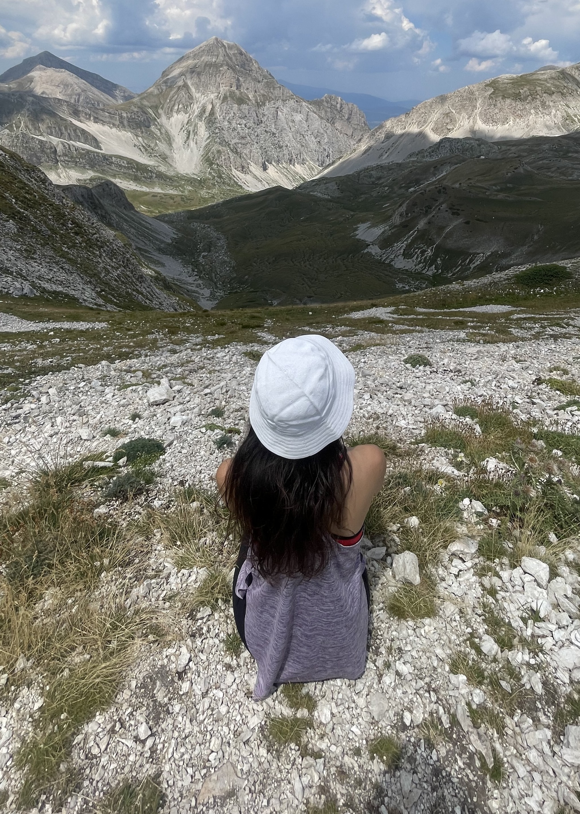
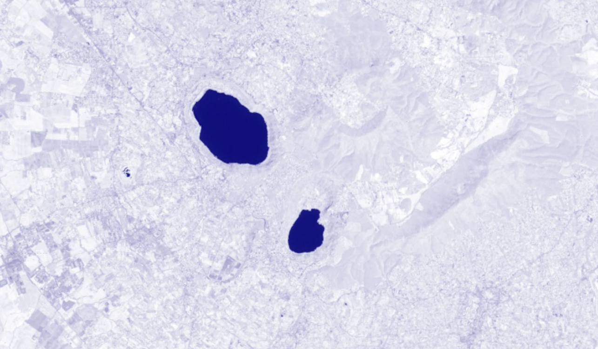
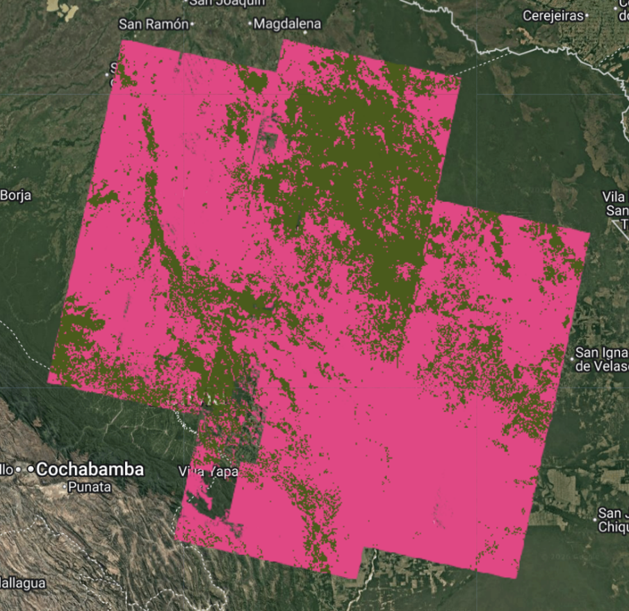
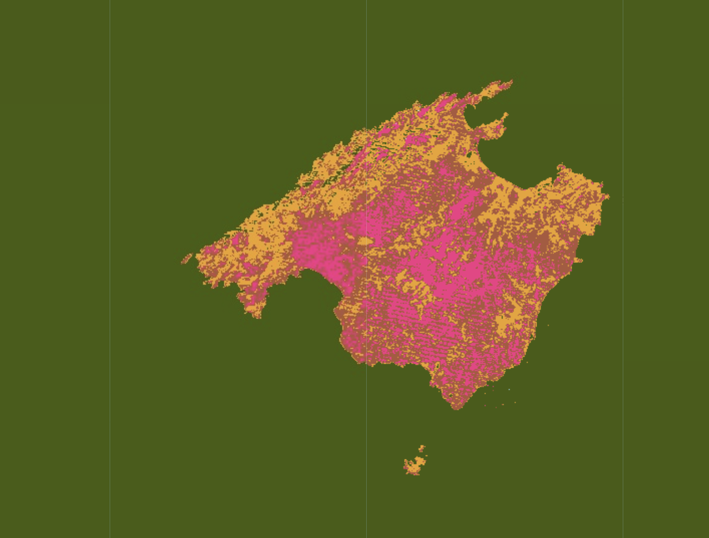

.jpg)
"Ventos et varium caeli praediscere morem / cura sit ac patrios cultusque habitusque locorum, / et quid quaeque ferat regio et quid quaeque recuset"
I am Sara Formicola, an Environmental Engineering MSc student passionate about environmental protection, sustainable planning and climate change adaptation. My academic background combines earth observation, climatology, risk assessment, geology and hydrology, with hands-on experience in satellite time series analysis, land cover mapping and territorial planning. Curious, proactive, and quick to learn, with a strong motivation to acquire new knowledge and contribute to innovative projects in sustainability and climate resilience.

Environmental Engineering • Sapienza University
+39 327 978 8961
Rome (IT)
5302sara@gmail.com
I have always been curious about how the places we live in actually work: why one city becomes hotter than another, how water flows through a landscape, and what satellite data can reveal about things that remain invisible to the naked eye. This curiosity shaped my academic journey and gradually led me to combine different tools and disciplines, from spatial analysis to engineering, to understand environmental processes and apply this knowledge to building more resilient and sustainable places. Today, I am particularly passionate about urban climatology, environmental remote sensing, climate adaptation, and sustainable urban regeneration. What truly interests me is not just understanding how these processes work, but translating that knowledge into practical solutions that people can see, experience, and benefit from in their everyday lives. I am motivated by projects that turn complex environmental challenges into tangible improvements for people and the places they live in, and this is the mindset I bring to every new experience.
.png)
Sapienza University of Rome
Completed
Foundational coursework in fluid mechanics, environmental chemistry, hydrology, and mathematics for engineering systems.
Sapienza University of Rome
Final Year • Specialization: Climate Change Adaptation and Mitigation
Advanced studies focused on spatial analysis, remote sensing, urban climatology, and climate-resilient engineering solutions.

Remote Sensing • Google Earth Engine

Remote Sensing • Google Earth Engine

Remote Sensing • Google Earth Engine

Remote Sensing • Google Earth Engine

Urban Climate • ENVI-Met

Hydraulic • HEC-RAS, HEC-HMS, QGIS

Sustainable Development and Planning